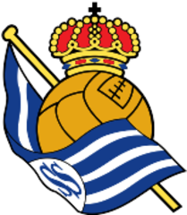
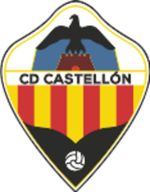
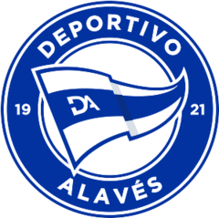
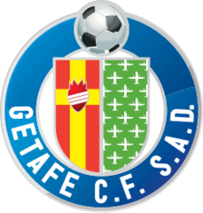
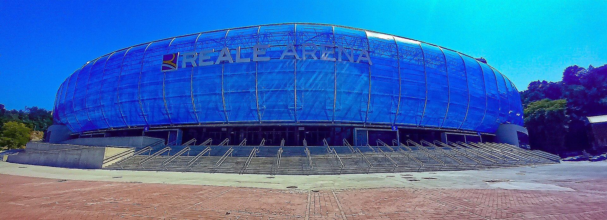
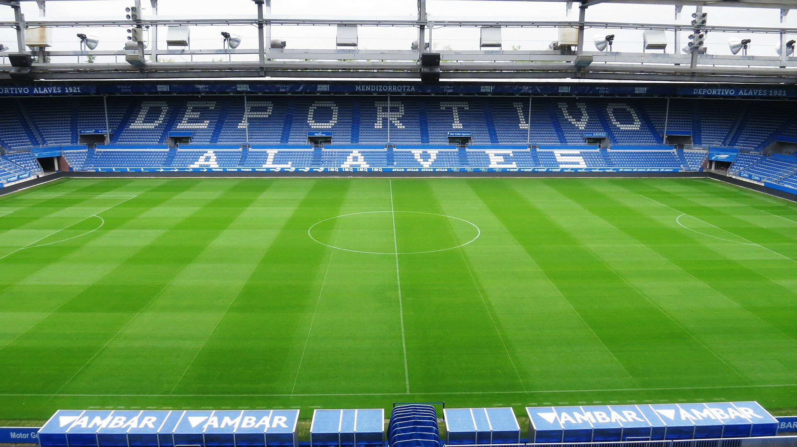

Base camp: Donostia / San Sebastián. Two openers on consecutive days — Real Sociedad B at Reale Arena / Anoeta (Fri) then Alavés in Vitoria (Sat). Dial party size, pick transport, see cost and leave-by times.


·



Reale Arena / AnoetaSan Sebastián · Fri

MendizorrotzaVitoria-Gasteiz · Sat
EstimatesTicket prices are mid-estimate until official sale. All times are Spain local (CEST): Sanse Fri 14 Aug 20:30 · Alavés Sat 15 Aug 19:30. Confirm venue (Anoeta vs Zubieta) before you go.
Party
2Adults
0Kids
2 people
Alavés rideAnoeta
Buffer
For this party
Loading…
The fixtures
Times in Spain local
Pick oneTap a match card to open the American-friendly briefing — who’s who, why go, and how to not look lost.
Transport
Timings + costs update with your mode picks
To Reale Arena
Centro / lodging → Anoeta on foot
One way
~20–35m
from San Sebastián centro
Round trip
€0
walk · free
Leave by ~19:45–20:00 from centro for a 20:30 KO.
To Mendizorrotza
San Sebastián → Vitoria (bus) + local hop
One way
~1h 30m
incl. local to stadium
Round trip / person
€32–44
bus ×2 + local
Leave by ~16:00–16:30 from SS for a 19:30 KO.
Same hub: Renfe (Estación del Norte) and the intercity bus station sit next to each other by the Urumea / María Cristina bridge — bus is underground, train at street level. You’re not choosing between two ends of town.
Pregame fuel
Pintxos · poteo · don’t starve before KO
Near Anoeta
Egia · Amara · 10–20 min walk from centro
Walk-and-graze from Parte Vieja if you’re early — classic San Sebastián move — then stroll down to the bowl.
Around the stadium: casual bars on Av. de Anoeta / Egia for a quick beer + tortilla. Less “Michelin crawl,” more matchday fuel.
Skip the full tasting menu pre-KO. Save the serious pintxo tour for after full time (~22:30) when the city is still awake.
Pro move: one cider / zurito near lodging, walk over, grab something small outside Gate zone, settle in.
Near Mendizorrotza
Vitoria Casco Viejo · before you hop to the ground
Casco Viejo first. Plaza de la Virgen Blanca and the lanes off Calle Cuchillería / Zapatería — densest pintxo strip in town.
Poteo rhythm: small drink + one bite, move. Don’t camp one bar if the clock’s ticking toward leave-for-stadium.
Near the ground you’ll find simpler matchday bars — fine for a last beer, thinner for food variety.
Build buffer: eat in the old town, then local bus/walk to Mendizorrotza so you’re not hangry in a queue at 18:45.